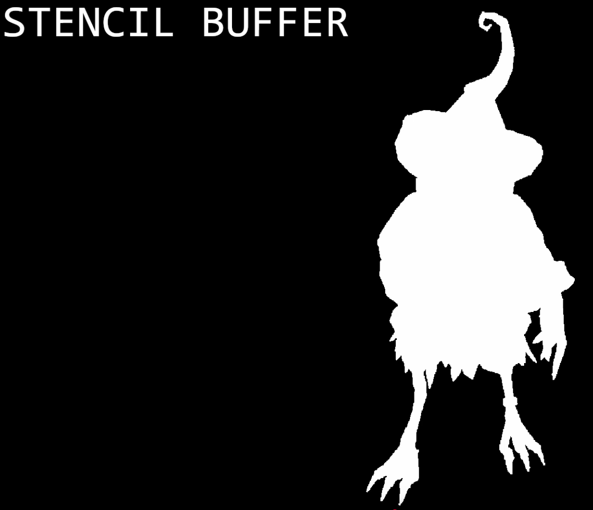

Depth Tests
Shader
-
gl_FragDepth-
Available only in the fragment shader.
-
Is an output variable that is used to establish the depth value for the current fragment.
-
It is a
float. -
If depth buffering is enabled and no shader writes to
gl_FragDepth, then the fixed function value for depth will be used (this value is contained in the z component ofgl_FragCoord) otherwise, the value written togl_FragDepthis used. -
If a shader statically assigns to
gl_FragDepth, then the value of the fragment's depth may be undefined for executions of the shader that don't take that path. That is, if the set of linked fragment shaders statically contain a write togl_FragDepth, then it is responsible for always writing it. -
Available in all versions of glsl.
-
-
gl_FragCoord-
Available only in the fragment shader.
-
Is an input variable that contains the window relative coordinate (x, y, z, 1/w) values for the fragment.
-
This value is the result of fixed functionality that interpolates primitives after vertex processing to generate fragments.
-
Multi-sampling :
-
If multi-sampling, this value can be for any location within the pixel, or one of the fragment samples.
-
-
Depth :
-
The
zcomponent is the depth value that would be used for the fragment's depth if no shader contained any writes togl_FragDepth. -
gl_FragCoord.zis the depth value of the fragment that your shader is operating on, not the current value of the depth buffer at the fragment position.
-
-
Changing the origin, by redeclaring it :
-
gl_FragCoordmay be redeclared with the additional layout qualifier identifiersorigin_upper_leftorpixel_center_integer. By default,gl_FragCoordassumes a lower-left origin for window coordinates and assumes pixel centers are located at half-pixel centers. -
Example :
-
The
(x, y)location(0.5, 0.5)is returned for the lower-left-most pixel in a window. The origin ofgl_FragCoordmay be changed by redeclaringgl_FragCoordwith theorigin_upper_leftidentifier. The values returned can also be shifted by half a pixel in both x and y bypixel_center_integerso it appears the pixels are centered at whole number pixel offsets. This moves the (x, y) value returned bygl_FragCoordof(0.5, 0.5)by default to(0.0, 0.0)withpixel_center_integer.
-
-
If
gl_FragCoordis redeclared in any fragment shader in a program, it must be redeclared in all fragment shaders in that program that have static use ofgl_FragCoord. -
Redeclaring
gl_FragCoordwith any accepted qualifier affects onlygl_FragCoord.xandgl_FragCoord.y. -
It has no effect on rasterization, transformation or any other part of the OpenGL pipeline or language features.
-
-
Available in all versions of glsl.
-
-
Depth Execution Modes :
-
(2025-10-07) Vulkan supports this.
-
Conservative depth can be enabled in Vulkan the same way as in OpenGL (i.e. with
layout(depth_<condition>) out float gl_FragDepth). -
You can test it and look at the SPIR-V output.
-
-
Allows for a possible optimization for implementations that relies on an early depth test to be run before the fragment.
// assume it may be modified in any way layout(depth_any) out float gl_FragDepth; // assume it may be modified such that its value will only increase layout(depth_greater) out float gl_FragDepth; // assume it may be modified such that its value will only decrease layout(depth_less) out float gl_FragDepth; // assume it will not be modified layout(depth_unchanged) out float gl_FragDepth;-
GL_ARB_conservative_depth. -
Violating the condition​ yields undefined behavior.
-
The layout qualifier for
gl_FragDepthspecifies constraints on the final value ofgl_FragDepthwritten by any shader invocation. GL implementations may perform optimizations assuming that the depth test fails (or passes) for a given fragment if all values ofgl_FragDepthconsistent with the layout qualifier would fail (or pass). If the final value ofgl_FragDepthis inconsistent with its layout qualifier, the result of the depth test for the corresponding fragment is undefined. However, no error will be generated in this case. When the depth test passes and depth writes are enabled, the value written to the depth buffer is always the value ofgl_FragDepth, whether or not it is consistent with the layout qualifier. -
<depth_any>-
The shader compiler will note any assignment to
gl_FragDepthmodifying it in an unknown way, and depth testing will always be performed after the shader has executed. -
By default,
gl_FragDepthassumes the<depth_any>layout qualifier.
-
-
<depth_greater>-
The GL will assume that the final value of
gl_FragDepthis greater than or equal to the fragment's interpolated depth value, as given by the<z>component ofgl_FragCoord.
-
-
<depth_less>-
The GL will assume that any modification of
gl_FragDepthwill only decrease its value.
-
-
<depth_unchanged>-
The shader compiler will honor any modification to
gl_FragDepth, but the rest of the GL assume thatgl_FragDepthis not assigned a new value.
-
-
If
gl_FragDepthis redeclared in any fragment shader in a program, it must be redeclared in all fragment shaders in that program that have static assignments togl_FragDepth. All redeclarations ofgl_FragDepthin all fragment shaders in a single program must have the same set of qualifiers. Within any shader, the first redeclarations ofgl_FragDepthmust appear before any use ofgl_FragDepth. The built-ingl_FragDepthis only predeclared in fragment shaders, so redeclaring it in any other shader stage will be illegal.
-
Depth Test
-
If the test fails, the fragment is discarded.
-
If the test passes, the depth attachment will be updated with the fragment’s output depth.
Depth Bias
-
Requires the
VkPhysicalDeviceFeatures::depthBiasClampfeature to be supported otherwiseVkPipelineRasterizationStateCreateInfo::depthBiasClampmust be0.0f. -
The depth bias values can be set dynamically using
DYNAMIC_STATE_DEPTH_BIASor theDYNAMIC_STATE_DEPTH_BIAS_ENABLE_EXTfrom EXT_extended_dynamic_state2 . -
The rasterizer can alter the depth values by adding a constant value or biasing them based on a fragment’s slope.
-
Controls whether to bias fragment depth values.
-
This is sometimes used for shadow mapping.
-
Bias Constant Factor :
-
Is a scalar factor controlling the constant depth value added to each fragment.
-
Scales the parameter
rof the depth attachment -
"
depthBiasConstantFactoris a scalar factor controlling the constant depth value added to each fragment. The value is in floating point and a typical value seems to be around 2.0-3.0."
-
-
Bias Slope Factor :
-
Is a scalar factor applied to a fragment’s slope in depth bias calculations.
-
Scales the maximum depth slope
mof the polygon. -
"I stumbled upon some Vulkan samples that used a much smaller constant bias, but the slope bias was quite high. However, because the slope bias has a much larger weight than the constant one it pretty much worked the same."
-
-
Bias Clamp :
-
Is the maximum (or minimum) depth bias of a fragment.
-
The scaled terms
depthBiasConstantFactoranddepthBiasSlopeFactorare summed to produce a value which is then clamped to a minimum or maximum value specified.
-
Depth Bounds
-
If the value is not within the depth bounds, the coverage mask is set to zero.
-
Requires the
VkPhysicalDeviceFeatures::depthBoundsfeature to be supported. -
The depth bound values can be set dynamically using
DYNAMIC_STATE_DEPTH_BOUNDSor theDYNAMIC_STATE_DEPTH_BOUNDS_TEST_ENABLE_EXTfrom EXT_extended_dynamic_state .
Depth Clamp
-
Controls whether to clamp the fragment’s depth values as described in Depth Test.
-
Before the sample’s
Zfis compared toZa,Zfis clamped to[min(n,f), max(n,f)], wherenandfare theminDepthandmaxDepthdepth range values of the viewport used by this fragment, respectively. -
If set to
TRUE, then fragments that are beyond the near and far planes are clamped to them as opposed to discarding them. -
This is useful in some special cases like shadow maps .
-
Requires the
VkPhysicalDeviceFeatures::depthClampfeature to be supported.
Depth Attachment
Clearing
-
It is always better to clear a depth buffer at the start of the pass with
loadOpset toATTACHMENT_LOAD_OP_CLEAR. -
Depth images can also be cleared outside a render pass using
vkCmdClearDepthStencilImage. -
When clearing, notice that
VkClearValueis a union andVkClearDepthStencilValue depthStencilshould be set instead of the color clear value.
Multi-sampling
-
The following post-rasterization occurs as a "per-sample" operation. This means when doing multisampling with a color attachment, any "depth buffer"
VkImageused as well must also have been created with the sameVkSampleCountFlagBitsvalue. -
A coverage mask is generated for each fragment, based on which samples within that fragment are determined to be within the area of the primitive that generated the fragment.
-
If a fragment operation results in all bits of the coverage mask being
0, the fragment is discarded. -
Resolving :
-
It is possible in Vulkan using the KHR_depth_stencil_resolve extension (promoted to Vulkan core in 1.2) to resolve multisampled depth/stencil attachments in a subpass in a similar manner as for color attachments.
-
Depth Image
Formats
-
Nvidia: Prefer using
D24_UNORM_S8_UINTorD32_SFLOATdepth formats,D32_SFLOAT_S8_UINTis not optimal. -
There are a few different depth formats and an implementation may expose support for in Vulkan.
-
For reading from a depth image only
D16_UNORMandD32_SFLOATare required to support being read via sampling or blit operations. -
For writing to a depth image
FORMAT_D16_UNORMis required to be supported. From here at least one of (FORMAT_X8_D24_UNORM_PACK32orFORMAT_D32_SFLOAT) and (FORMAT_D24_UNORM_S8_UINTorFORMAT_D32_SFLOAT_S8_UINT) must also be supported. This will involve some extra logic when trying to find which format to use if both the depth and stencil are needed in the same format.
Aspect Masks
-
Required when performing operations such as image barriers or clearing.
-
DEPTH
Sharing Mode
-
Nvidia:
VkSharingModeis ignored by the driver, soSHARING_MODE_CONCURRENTincurs no overhead relative toSHARING_MODE_EXCLUSIVE.
Layout Transition
// Example of going from undefined layout to a depth attachment to be read and written to
// Core Vulkan example
srcAccessMask = 0;
dstAccessMask = ACCESS_DEPTH_STENCIL_ATTACHMENT_READ | ACCESS_DEPTH_STENCIL_ATTACHMENT_WRITE;
sourceStage = PIPELINE_STAGE_TOP_OF_PIPE;
destinationStage = PIPELINE_STAGE_EARLY_FRAGMENT_TESTS | PIPELINE_STAGE_LATE_FRAGMENT_TESTS;
// KHR_synchronization2
srcAccessMask = ACCESS_2_NONE_KHR;
dstAccessMask = ACCESS_2_DEPTH_STENCIL_ATTACHMENT_READ_KHR | ACCESS_2_DEPTH_STENCIL_ATTACHMENT_WRITE_KHR;
sourceStage = PIPELINE_STAGE_2_NONE_KHR;
destinationStage = PIPELINE_STAGE_2_EARLY_FRAGMENT_TESTS_KHR | PIPELINE_STAGE_2_LATE_FRAGMENT_TESTS_KHR;
-
If unsure to use only early or late fragment tests for your application, use both.
Copying
-
Nvidia: Copy both depth and stencil to avoid a slow path for copying.
Reverse Depth Buffer
Normal Reconstruction from Depth
-
You can infer the normals by calculating the derivatives on x and y between pixels of the depth buffer.
-
Implementation - Wicked Engine (János Turánszki (turanszkij)) .
-
Need :
-
"In screen-space decals rendering, normal buffer is required to reject pixels projected onto near-perpendicular surfaces. But back then I was working on a forward pipeline, so no normal buffer was outputted. It seemed the best choice was to reconstruct it directly from depth buffer, as long as we could avoid introducing errors, which was not easy though."
-
So, for a forward shading, this could be necessary.
-
It could be avoided if saving the normals in a texture to be sent to a post-processing pass; aka, if introduced a bit of deferred in the forward renderer.
-
-
Performance :
-
There's a lot of discussion if this is worthwhile. On a deferred renderer, this could be good, but the gain in performance is not obvious. It really depends on how it was implemented.
-
Stencil
-
 .
-
1 or 0, if have a fragment from our object.
Used in
-
Portals.
-
Mirrors.
-
Outlining
Stencil Attachment
-
The
PipelineRenderingCreateInfoasks for astencilAttachmentFormat, andRenderingInfoasks forpStencilAttachment. -
This is for cases where you want separate depth and stencil images, instead of merged together, like when having a depth image with
D24_UNORM_S8_UINT, where theS8_UINTis for the stencil. -
KHR_separate_depth_stencil_layouts.-
Core in Vulkan 1.2.
-
This extension allows image memory barriers for 'depth+stencil' images to have just one of the
IMAGE_ASPECT_DEPTHorIMAGE_ASPECT_STENCILaspect bits set, rather than require both. This allows their layouts to be set independently. Image LayoutsIMAGE_LAYOUT_DEPTH_ATTACHMENT_OPTIMAL,IMAGE_LAYOUT_DEPTH_READ_ONLY_OPTIMAL,IMAGE_LAYOUT_STENCIL_ATTACHMENT_OPTIMAL, orIMAGE_LAYOUT_STENCIL_READ_ONLY_OPTIMALcan be used. -
To support depth+stencil images with different layouts for the depth and stencil aspects, the depth+stencil attachment interface has been updated to support a separate layout for stencil.
-
VkPhysicalDeviceSeparateDepthStencilLayoutsFeatures.-
Structure describing whether the implementation can do depth and stencil image barriers separately.
-
It's just a struct with a bool telling if the feature is supported.
-
-
For render passes / subpasses:-
VkAttachmentDescriptionStencilLayout.-
Deprecated in Vulkan 1.4.
-
Extends
VkAttachmentDescription2.-
Deprecated in Vulkan 1.4.
-
-
-
VkAttachmentReferenceStencilLayout.-
Not deprecated.
-
Extends
VkAttachmentReference2.-
Deprecated in Vulkan 1.4.
-
-
-
-
Formats
-
S8_UINT-
It makes sense, as it's the same format used for stencil in the depth format
D24_UNORM_S8_UINT.
-